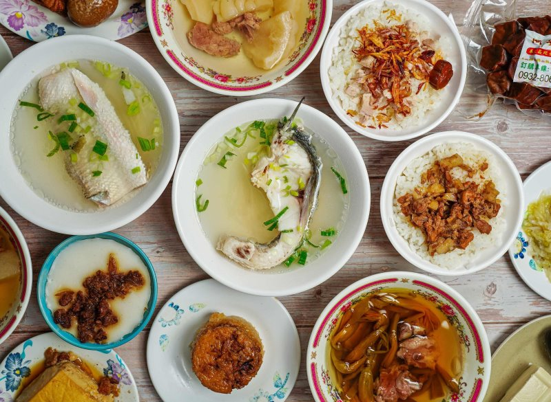
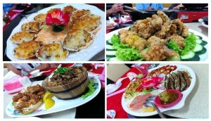
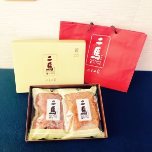

水上老牌草魚粥 |
|
一碗65元的「水上老牌草魚粥」 營業超過30年，魚骨熬煮的魚湯香氣讓人垂涎三尺，超鮮魚粥湯頭鮮甜美味，老少咸宜，有來水上一定要記得來品嘗。如果你有注意到開始營業時間，會發現是早上4點半，沒錯！老闆說因為有人睡到半夜肚子餓，天還沒亮一早就跑來吃，可見這個味道讓人魂牽夢縈啊 來源: ETtoday新聞雲 |
 |
皇富海鮮店 |
|
嘉義縣水上鄉/皇富海鮮餐廳 嘉義水上海鮮老店，一嚐小時候吃辦桌的懷舊古早味，平價實惠的新鮮海產料理，享受滿滿幸福感的好滋味~ 頭盤四冷：鹹香烏魚子、鮮燙小卷、綜合魚生、還有目前吃過最好吃的最強蚵仔酥！ 來源: https://haylei.info/?p=24396 |
 |
特色伴手禮 |
|
| 起源於上一代的堅持，除了有濃濃的人情味還有對產品的執著，兩姐弟攜手一起守護最原始的熱情，讓更多人感受傳統與創新碰撞出的火花。 透過馮氏製作的肉鬆食品，找回最初的感動。 |  |